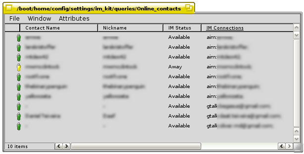
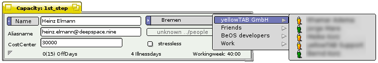
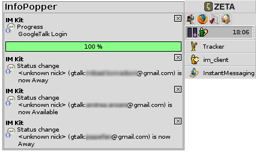
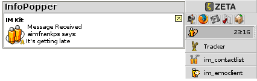
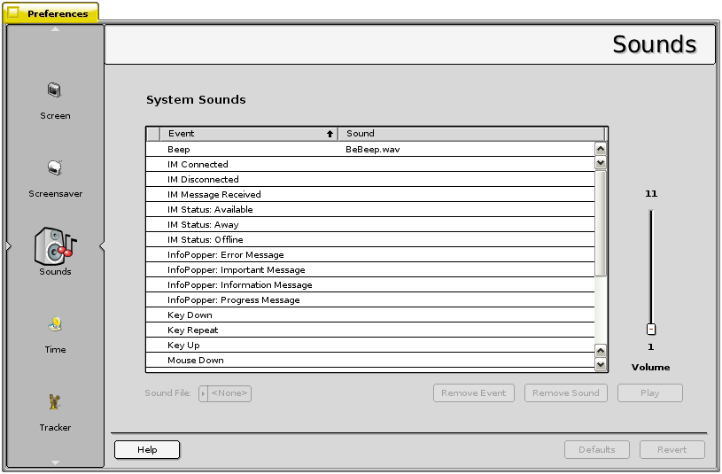

The Instant Messenger Kit
Introduction
The developer team is constantly looking for new members. If you want to contribute, please don't hesitate to contact us or simply just join us on our IRC channel #beosimkit on irc.freenode.org
As we are all using ZETA, we hope that there are someone that can help us out with compiling a BeOS version of the IM kit.
Support the devs!
The money you donate will be portioned out to the poor coders who spend the best years of their life making cool software for free!
The Instant Messenger kit (IM kit) is a multi-platform instant
messaging client, and the purpose of the kit is to provide a uniform
way to access the various instant messenger networks that exist, and to provide
a connection between a People file and the instant messenger accounts that a person
has.
The IM Kit is a modular framework developed to make it easy to access
the five most commonly used IM networks: AIM, Google Talk, ICQ, Jabber, MSN and Yahoo!, and is designed in a way that fully integrates it with ZETA.
It makes use of ZETA attributes, indexes and live queries to make
it as flexible as possible. With the IM Kit you can, for instance,
search for all members of your family that are online and that by
using the standard Find interface in the operating system. You can also manage all the contacts
by using the Tracker.

The close integration with the Tracker, makes it real easy to integrate the online status of contacts in to other applications, examples are the small system application InfoPopper, Deskbar and the project management application TimeZliner. Seeing that some of your project workers are online when you work on the project management file, means that you don't waste time on composing emails when a few minutes chat would answer your questions straight away.

How the Instant Messenger Kit works
When you start the IM kit and log in to the protocols you have accounts for, the IM kit will connect to these IM networks, which directs the chat traffic between all ZETA users and users on other platforms using one of these protocols. What makes instant messaging so great compared to e-mail, is that the conversations happen in realtime.

When the IM kit is running, the application InfoPopper will constantly be checking with the activated networks to see if any of your friends are online, what their statuses are, and if they're typing/sending you messages. When you or one of your friends initiates a chat, the activated servers connect your client applications so you can send messages to each others. InfoPopper can be downloaded from BeBits, but is also part of ZETA 1.1.

Sound events
The IM kit adds a number of new sound events that you can assign sounds to in the Sounds preflet in the Preferences in ZETA. A nice little 8-bit collection of sounds has been installed in /boot/apps/im_kit/sounds if you don't have sounds of your own to use.
